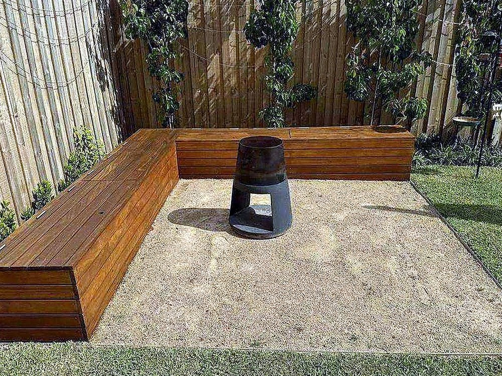
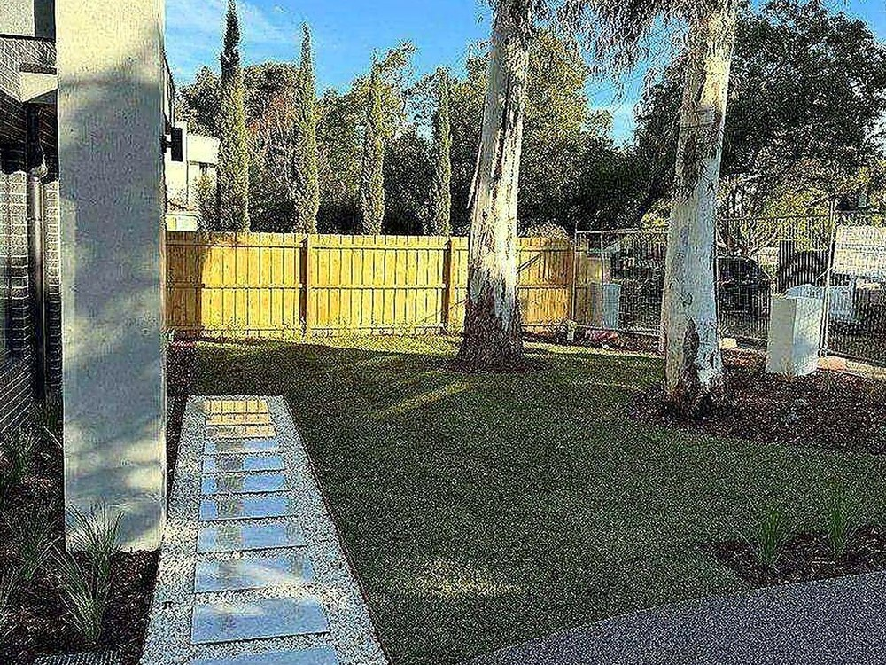

Lawn mowing
Cut, edged and blown clean. Height set to the season so the grass thickens instead of thinning.
Mowing, edging, hedging and the tidy-ups in between — on a schedule that suits the yard, not whenever someone is free.
Call 0406 273 136 Get a priceRegular upkeep and one-off clean-ups, residential and small commercial.
Cut, edged and blown clean. Height set to the season so the grass thickens instead of thinning.
Clean lines along paths, fences and beds — the part that makes a mown lawn look mown.
Hedges squared or shaped, shrubs cut back, growth taken away.
Weeds out, beds turned over, mulch topped up, green waste removed.
Acreage and big backyards handled on a ride-on with the same finish as a small yard.
Weekly, fortnightly or monthly — the same day each round, so it never gets away.
Outdoor spaces kept tidy — turf, beds and edges.


You know when the mower is coming, so the gate is open and the dog is in.
Quoted on the size and condition of the block, not a flat rate that ignores both.
Clippings and prunings taken away with us — nothing left in a pile behind the shed.
Wyong and the surrounding Central Coast suburbs.
Tell us the suburb and roughly how big the yard is. For a regular run, mention how often.